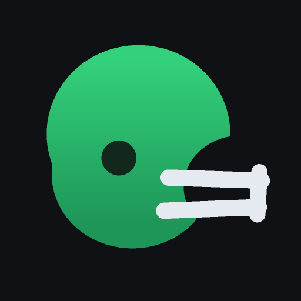

Fantasy Tracker
Waking up your leagues…
The app naps when nobody's using it. The first open can take up to a minute — hang tight and you'll be dropped straight in.

Waking up your leagues…
The app naps when nobody's using it. The first open can take up to a minute — hang tight and you'll be dropped straight in.